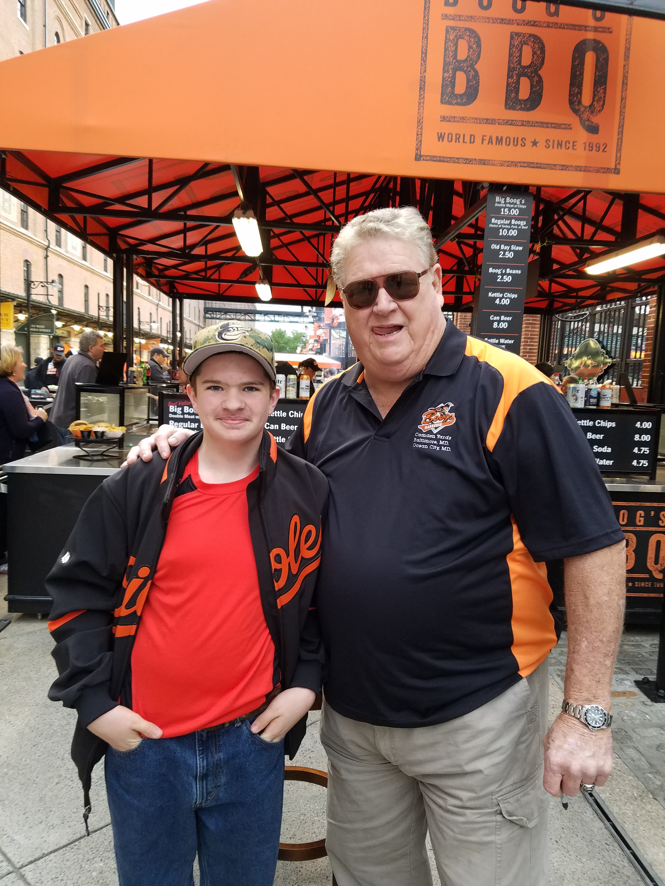
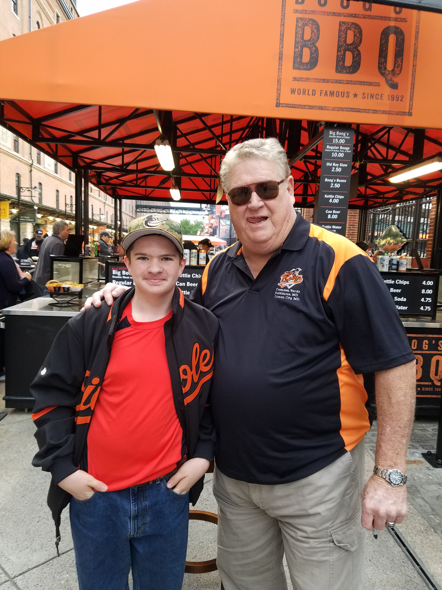

.png) 

Why, Mr. Eastwood. Nice to see ya. I see you got yourself some respectable clothes, lad. And a fine hat. Yeah, well, a couple other people didn't like the way the other one looked on me. Sure that one suits you Mr. Eastwood. Very good for you. Ahh...thanks. (he finishes off the pie and looks at the bottom of the tin plate which says 'Frisbee'.) Hey...Frisbee. Far out. (he grins as he sets the tin down and then walks away.) (Seamus and Maggie just look after him for a minute.)Cause, George, she wants to go to the dance with you, she just doesn't know it yet. That's why we got to show her that you, George McFly, are a fighter. You're somebody who's gonna stand up for yourself, someone who's gonna protect her. Yeah, but I never picked a fight in my entire life. Your not gonna be picking a fight, Dad, dad dad daddy-o. You're coming to a rescue, right? Okay, let's go over the plan again. 8:55, where are you gonna be. I'm gonna be at the dance. Right, and where am I gonna be?(w.t) Doc, is everything all right, over? (v.o) 10-4 Marty, but it's very miserable flying weather. (DeLorean) (w.t) I'm going to have to turn and make a landing from this direction. I'll have to circle round and make a long approach from the south. Have you got the book? (Street)You got a permit for that? Of course I do. Just a second, let's see if I could find it. (While Doc isn't looking Marty slips the letter into the pocket of his jacket, then he leaves to pick up Lorraine.) (School Parking Lot) (Marty and Lorraine arrive at the dance. Marty's very nervous.)(Marty looks at the paper again.) Hey Doc, this date...wait, this is tomorrow's newspaper! Precisely! I already went further ahead into time to see what else happens. I backtracked everything to this one event, that's why we're here today to prevent this incident from ever happening. (His watch beeps.) Damn, I'm late! Wait a minute, where are you going now? To intercept the real Marty Junior, you're taking his place. Round the corner at the Café 80's, guy named Griff, just say no!Jennifer. Jen. Jennifer. Wake up. (Marty sits beside her on the swing. She hasn't stirred yet. He gently touches her cheek. He bends down and kisses her. Her eyes open and she smiles.) Marty. (She sits up and embraces him, and she changes her expression.) I had the worst nightmare. (In Town.) (Marty and Jennifer are sitting in the truck, waiting for a traffic light. No other cars are around.)
Give us our ball back! What ball? That ball! What ball are you talking about? Give us our ball back!Hey, hey, thanks. Of course, you understand that if you lose...I'm taking it back. (He smiles and walks away.) (Marty stares after the gun salesman dumbfounded.) Thanks again. (Marty walks the other direction and runs into Maggie and Seamus. Maggie is carrying William. They continue along together.)Hook on! (The gang connect their hoverboards to Griff's. Marty is trying to move, he's pushing his foot in the water as if trying to start a skateboard.) Batter up! (The board blasts off. Griff and his gang are on the way! Marty tries pushing the board again, but it doesn't work. Griff is getting closer. Then, just as Griff would have got Marty, Marty jumps off the board and lands in the water. Griff's board catches on a rock and Griff and his gang all fall off. They fly through the air and smash through the front window of Courthouse Mall. Marty resurfaces.) Holy shit! (He grabs the hoverboard and gets out of the water. Cut to Biff.) Buttheads.(He does a spin and a jump at the end, and manages to jump on a loose wooden plank. At the other end of the plank is a barrel full of tobacco spit, and it goes flying and spills all over Tannen. Tannen draws his gun and pulls the trigger, but luckily enough for Marty, Tannen is out of bullets. Marty hurries to get out of the saloon but he trips and hits the old men's table.) You better run, squirrel! Y'all get him!!! (Marty climbs over tables and swings on the chandelier before finally getting out of the saloon. But the gang is in hot pursuit. Marty runs like crazy.) Whoa! Whoa! Whoa! Whoa!Do you mind if we park for a while? That's a great idea. I'd love to park. Huh? Well, Marty, I'm almost eighteen-years-old, it's not like I've never parked before. (shocked) What?(Biff arrives back in 2015 and parks the DeLorean. He gets out, clutching his chest. Doc calls to Marty.) Marty! Marty! Marty! Come quick! Quick! (Biff gets out of the DeLorean. The top of his cane breaks off and stays in there.) Oh, oh, ahh! (Marty and Doc are running down the street carrying Jennifer.)
(Three old men are sitting at a table in the saloon talking amongst themselves.) Take a look at what just breezed in the door. Why I didn't know the circus was in town! Looks like he got that shirt off'n a dead Chinee. (The others laugh)Oh, it gets worse! Next week your daughter attempts to break him out of jail and she gets set up for 20 years! My daughter? Wait a minute, I have a daughter? You see, this one event starts a chain reaction which completely destroys your entire family. (Marty looks at the paper again.) Hey Doc, this date...wait, this is tomorrow's newspaper!(Marty pulls out the photo of the tombstone again. It clearly reads 'Here lies Clint Eastwood'. He gulps.) Listen. I'm not really feeling up to this today. So I'm gonna have to forfeit! Forfeit? Forfeit! (He turns to one of his gang members.) What's that mean? Uh...it means that you win without a fight. Without shootin'? Hey, he can't do that. (to Marty) You can't do that! (Marty gulps.) You know what I think? Ah think you're a gutless yella turd. And I'm giving ya to the count of 10 to come out here and prove I'm wrong. 1...(Biff spots a manure truck and heads straight for it.) I'm gonna ram him. (Marty manages to get out of the way, and Biff heads straight for the manure truck.) Shit. (They hit the truck and it dumps a load of manure into the car and onto them. Marty walks over to the kid he borrowed the 'skateboard' from and gives it back to him.)(Doc and Marty are using flashlights to try and find the spot where the Delorean is buried.) This reminds me of the time I attempted to reach the center of the earth. I'd be reading my favorite author, Jules Verne. I spent weeks preparing for the expedition, I didn't even get this far. Of course, I was only 12 at the time. It was the writings of Jules Verne that had a profound effect on my life. I was 11 when I first read 20,000 Leagues Under the Sea. That's when I realized that I must devote my life into science. Doc... check it out... look at this. (He points to a walled off section marked by a board that has "ELB" on it.) My initials... just like in Journey To The Center of the Earth! That means the time machine must be right through this wall. (Doc and Marty break through the wall and find the Delorean up on blocks covered with a sheet.) It's been buried here for 70 years, 2 months, and 13 days. Astounding.Listen, Doc, you know there's something I haven't told you about the night we made that tape. Please, Marty, don't tell me, no man should know too much about their own destiny. You don't understand. I do understand. If I know too much about my own future I could endanger my own existence, just as you endangered yours. You're…you're right.